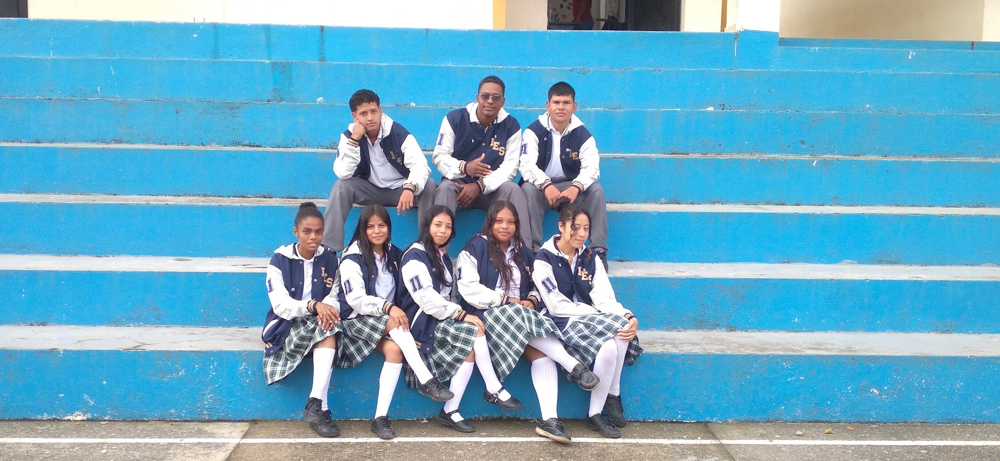
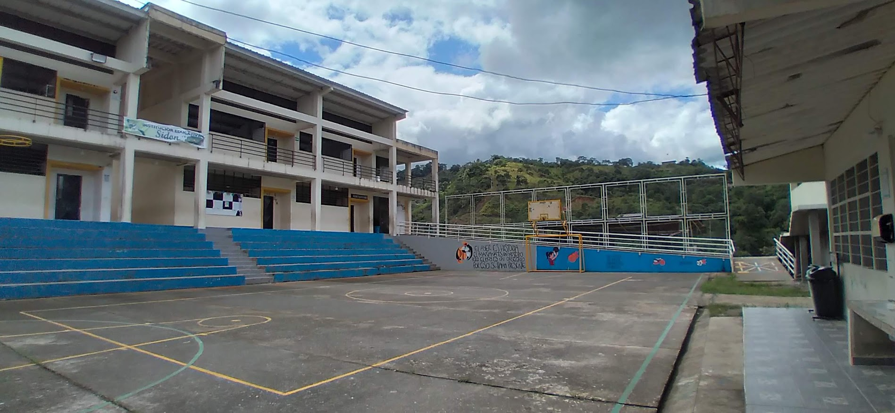
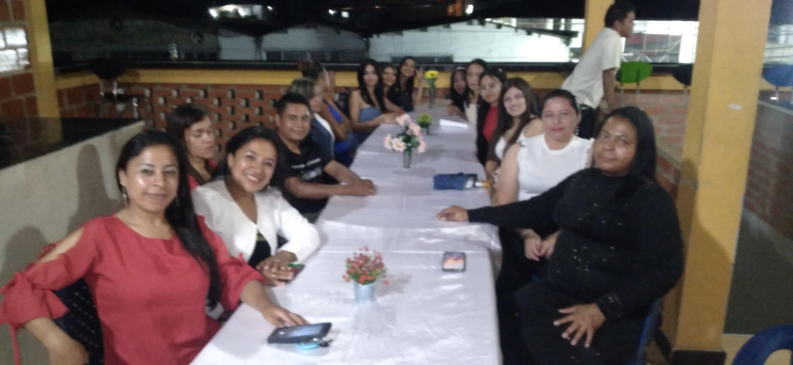
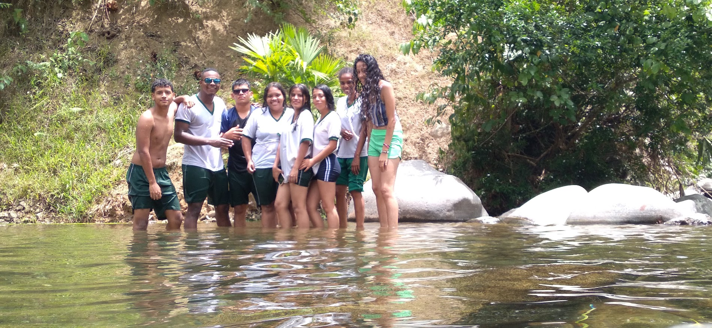
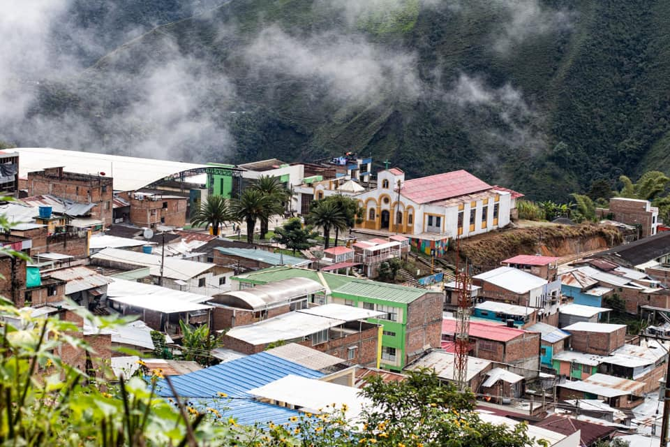
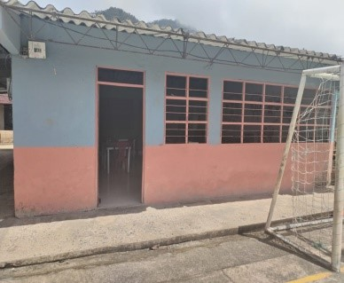
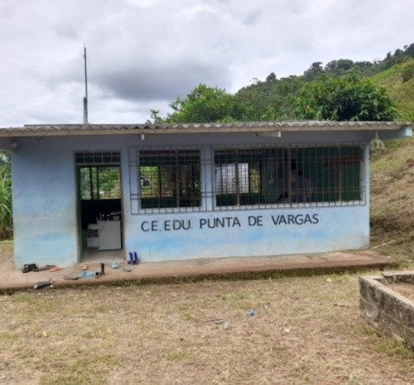
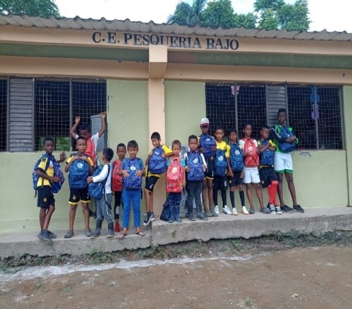
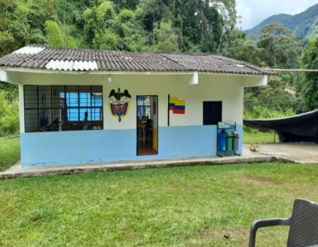
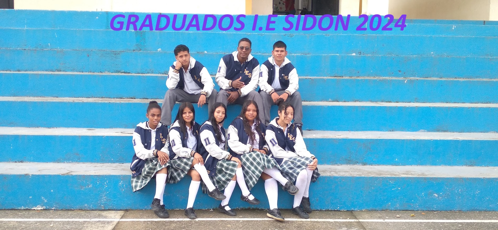

Registro Audiovisual
Audiovisual Comunitario
Expresiones de la juventud y la comunidad educativa en el territorio.
Presentación y Narración Audiovisual Estudiantil
Archivo institucional de actividades escolares y testimonios juveniles en Sidón.